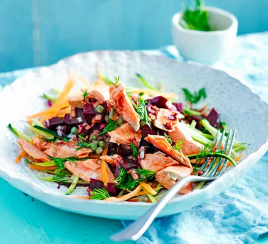

Veggie Salmon Bowl

Description
Succulent salmon flaked over a bed of healthy vegetables makes a delicious, protein-packed salad that's also low-calorie, gluten-free and rich in beneficial omega-3 fats
Ingredients
- 2 Carrots
- 1 Large Courgette
- 2 cooked beetroot, diced
- 1/3 pack of dill, chopped
- 1 small red onion, finely chopped
- 280g poached or canned wild salmon
- 2 tbsp capers in vinegar
Steps
- Shred the carrots and courgette into long spaghetti strips with a julienne peeler or spiralizer, and pile onto two plates.
- STEP 2
Stir the beetroot, balsamic vinegar, chopped dill and red onion together in a small bowl, then spoon on top of the veg. Flake over chunks of the salmon and scatter with the capers and extra dill, if you like.